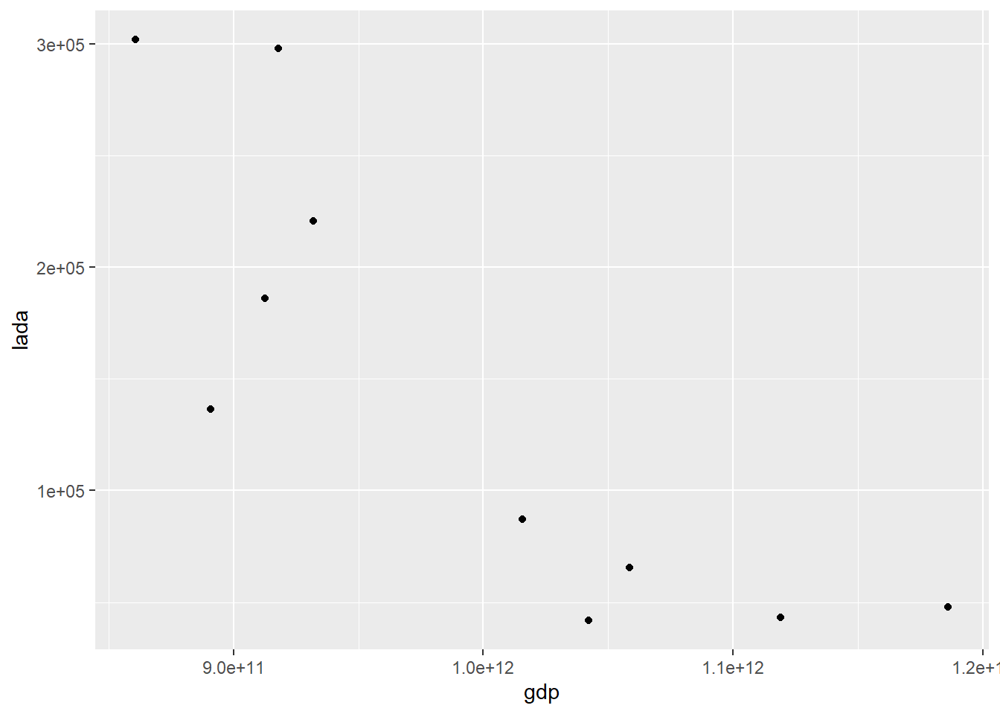

library(tidyverse)
library(readxl)PENGARUH EKSPOR LADA HITAM TERHADAP PERTUMBUHAN GDP INDONESI SELAMA 10 TAHUN TERAKHIR PERIODE (2012-2021)
Metode Penelitian Politeknik APP Jakarta

1 Pendahuluan
1.1 Latar belakang
Perdagangan Internasional adalah kegiatan dagang yang dilakukan oleh satu negara atau lebih, yang didalamnya terdapat kegiatan yang disebut ekspor dan impor. Ekspor adalah kegiatan mengeluarkan barang dari daerah pabean, menurut Peraturan Pemerintah Nomor 10 tahun 2021. Kegiatan ekspor berhubungan dengan hasil GDP (Gross Domestic Product) yaitu pendapatan nasional.
Indonesia sebagai negara agraris yang memiliki lahan pertanian yang luas dan sumber daya alam beraneka ragam dan berlimpah. Salah satu komoditi pertanian yang dihasilkan adalah komoditi Lada Hitam. Sebagai negara kedua penghasil lada terbesar dunia yang berkontribusi sebesar 13,70% dan rata-rata produksi 86.000 ton.
Oleh karena itu penelitian ini membahas seberapa besar pengaruh ekspor lada hitam terhadap GPD Indonesia selama 10 tahun dimulai dari tahun 2017-2021.
1.2 Ruang lingkup
Penelitian ini memiliki ruang lingkup jumlah data ekspor lada hitam terhadap GDP Indonesia dengan periode penelitian tahun 2017-2021. Data ekspor lada hitam diperoleh dari BPS, sedangkan data GDP Indonesia diperoleh dari The Word Bank atau WTD.
1.3 Rumusan masalah
Permasalahan yang akan dibahas dalam penelitian ini adalah:
- Bagaimana pengaruh ekspor lada hitam terhadap GDP Indonesia?
- Bagaimana nilai ekspor lada hitam terhadap GDP Indonesia?
1.4 Tujuan dan manfaat penelitian
Berdasarkan rumusan masalah yang telah disampaikan, penelitian ini bertujuan untuk mengetahui pengaruh ekspor lada hitam terhadap GDP Indonesia, mengetahui nilai ekspor lada hitam terhadap GDP Indonesia, dan memenuhi tugas mata kuliah Metodologi Penelitian. Penelitian ini diharapkan agar pembaca dapat mengetahui hubungan antara ekspor lada terhadap GDP Indoensia dan untuk menambah pengetahuan para pembaca tentang ekspor lada dan GDP Indonesia.
1.5 Package
Packages yang digunakan pada penelitian ini antara lain sebagai berikut:
2 Studi pustaka
2.1 Teori Ekspor
Menurut Astuti Purnawati (2013) dan Sri Fatmawati (2013), Ekspor adalah kegiatan menjual barang/jasa dari daerah pabean sesuai peraturan dan undang-undang yang berlaku. Daerah pabean yang dimaksud ialah seluruh wilayah nasional dari suatu negara , diamana dipungut bea masuk dan bea keluar untuk semua barang-barang yang melewati wilayah tersebut.
2.2 Teori Lada
Lada merupakan tumbuhan merambat yang hidup pada iklim tropis dimana bijinya sangat sering dimanfaatkan sebagai bumbu masakan. Aroma dan rasa lada sangat khas, sehingga terkadang menjadi bagian dari resep masakan andalan (Mediatani, 2015)
2.3 Teori PDB
Produk Domestik Bruto atau dalam bahasa Inggrisnya Gross Domestic Product (GDP) adalah nilai barang dan jasa dalam suatu negara yang diproduksikan oleh faktor-faktor produksi milik warga negara dan negara asing. (Sukirno, 2013:35)
3 Metode penelitian
3.1 Data
Data jumlah ekspor lada hitam dan GDP Indonesia tahun 2012-2020
| Tahun | Jumlah Ekspor Lada (US$) | GDP Indonesia |
|---|---|---|
| 2012 | 298125,5 | 917869910105,749 |
| 2013 | 186046,7 | 912524136718,018 |
| 2014 | 136465,3 | 890814755233,225 |
| 2015 | 302020,5 | 860854235065,079 |
| 2016 | 220679,4 | 931877364177,742 |
| 2017 | 87184,4 | 1015618742565,81 |
| 2018 | 41716,3 | 1042271531011,99 |
| 2019 | 43125,4 | 1119099868265,25 |
| 2020 | 65641,6 | 1058688935454,78 |
| 2021 | 47893,5 | 1186092991320,04 |
penelitian ini menggunakan data BPS dan WTD.
dat<-read_excel('datalulu.xlsx')
ggplot(data=dat,aes(x=gdp,y=lada)) +
geom_point()
3.2 Metode analisis
Metode yang dipilih adalah regresi univariat atau Ordinary Least Square (OLS) dengan 1 variabel independen. Penelitian ini merbaksud mencari hubungan antara Ekspor Lada (EL) dan GDP Indonesia. Spesifikasi yang dilakukan adalah:
\[ y_{t}=\beta_0 + \beta_1 x_t+\mu_t \] di mana \(y_t\) adalah GDP dan \(x_t\) adalah EL .
4 Pembahasan
4.1 Pembahasan masalah
Karena penelitian ini menggunakan OLS,dengan menggunakan data Ekspor Lada Hitam dan GDP Indonesia dengan periode tahun 2012-2021. Maka data yang ditampilkan dan divisualisasikan adalah sebagai berikut:
4.2 Analisis masalah
Hasil regresinya adalah
reg<-lm(gdp~lada,data=dat)
summary(reg)
Call:
lm(formula = gdp ~ lada, data = dat)
Residuals:
Min 1Q Median 3Q Max
-1.083e+11 -3.542e+10 1.512e+09 3.096e+10 1.106e+11
Coefficients:
Estimate Std. Error t value Pr(>|t|)
(Intercept) 1.117e+12 3.598e+10 31.041 1.26e-09 ***
lada -8.625e+05 2.078e+05 -4.151 0.0032 **
---
Signif. codes: 0 '***' 0.001 '**' 0.01 '*' 0.05 '.' 0.1 ' ' 1
Residual standard error: 6.426e+10 on 8 degrees of freedom
Multiple R-squared: 0.6829, Adjusted R-squared: 0.6433
F-statistic: 17.23 on 1 and 8 DF, p-value: 0.0032045 Kesimpulan
Berdasarkan hasil regresi diatas dapat dilihat bahwa setiap nilai ekspor lada hitam yang dilakukan akan menurunkan GDP Indonesia sebesar -8.625+05 (-862.500.000 USD). Dari hasil regresi tersebut dapat disimpulkan bahwa jumlah ekspor lada hitam selama tahun 2017-2021 berpengaruh terhadap hasil nominal GDP Indonesia. Sehingga ekspor lada hitam cukup berpengaruh terhadap nilai GDP Indonesia. Karena hasil regresinya memiliki bintang sebanyak ** yang dimana dapat diartikan bahwa data diatas merupakan data yang signifikan.
6 Referensi
Badan Pusat Statistik. (t.t.). Diambil 19 Januari 2023, dari https://www.bps.go.id/statictable/2019/02/18/2021/ekspor-lada-hitam-menurut-negara-tujuan-utama-2012–2021.html
Echo, P. (2022, April 5). Menjadi Negara Eksportir Lada Terbesar Ke 2 di Dunia, RI Tingkatkan Nilai Ekspor Lada, Teh, Hingga Kelapa. Fakultas Pertanian dan Peternakan. https://fpp.umko.ac.id/2022/04/05/menjadi-negara-eksportir-lada-terbesar-ke-2-di-dunia-ri-tingkatkan-nilai-ekspor-lada-teh-hingga-kelapa/